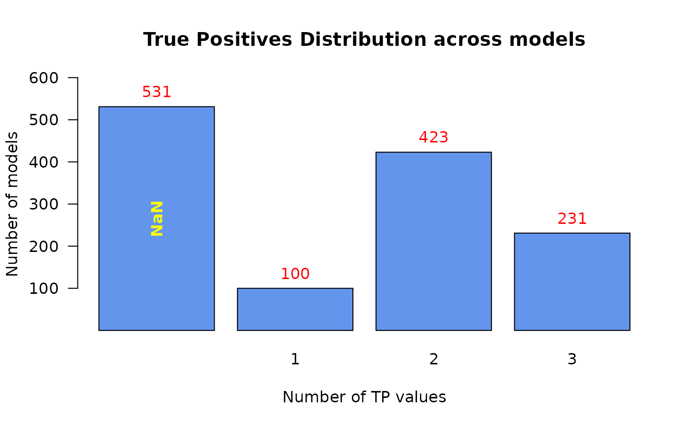

Use this function to produce a bar plot when the input is the result of using the table function to a numeric vector
make_barplot_on_models_stats( models.stats, cell.line = NULL, title, xlab, ylab, cont.values = FALSE, threshold = 0, ylim.add = 0 )
| models.stats | table object, the result of using table on a (numeric) vector. Usually it represents some models statistics summary - counts for each TP prediction value for example. |
|---|---|
| cell.line | string. The name of the cell line to be used in the title of the produced plot. Default value: NULL (the cell line name will not be added to the title) |
| title | string. The title of the plot |
| xlab | string. The title of the x-axis |
| ylab | string. The title of the y-axis |
| cont.values | logical. If TRUE, the values of the x-axis will be trimmed to 3 digits after the decimal point. Default value: FALSE. |
| threshold | integer. Values from the |
| ylim.add | integer. Signifies the height to add to the upper
|
x = c(rep(1,100), rep(2,423), rep(3,231), rep(NaN,531)) make_barplot_on_models_stats(models.stats = table(x, useNA = "ifany"), title = "True Positives Distribution across models", xlab = "Number of TP values", ylab = "Number of models")#> [1] TRUE